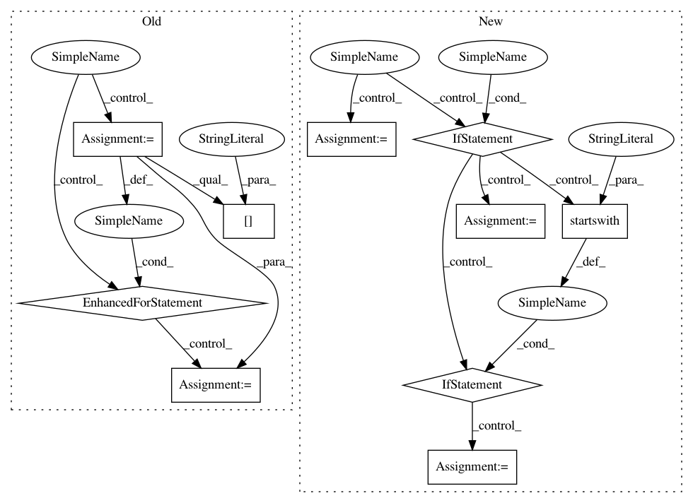

0be455f86d595c12333541c09f2c5861dd76c2d4,eval_utils.py,,eval_split,#Any#Any#Any#Any#,97
Before Change
with torch.no_grad():
_seq, _sampleLogprobs = model(fc_feats, att_feats, att_masks, opt=tmp_eval_kwargs, mode="sample")
_sents = utils.decode_sequence(loader.get_vocab(), _seq)
for k, sent in enumerate(_sents):
entry = {"image_id": data["infos"][k // sample_n]["id"], "caption": sent}
n_predictions.append(entry)
// case 3 gumbel max
elif sample_n_method == "gumbel":
tmp_eval_kwargs.update({"sample_max": 2, "beam_size": 1}) // randomness from sample
with torch.no_grad():
_seq, _sampleLogprobs = model(fc_feats, att_feats, att_masks, opt=tmp_eval_kwargs, mode="sample")
After Change
sample_n_method == "gumbel" or \
sample_n_method.startswith("top"):
if sample_n_method == "sample":
tmp_sample_max = 0
elif sample_n_method == "gumbel":
tmp_sample_max = 2
elif sample_n_method.startswith("top"):
tmp_sample_max = -int(sample_n_method[3:])
tmp_eval_kwargs.update({"sample_max": tmp_sample_max, "beam_size": 1}) // randomness from sample
with torch.no_grad():
_seq, _sampleLogprobs = model(fc_feats, att_feats, att_masks, opt=tmp_eval_kwargs, mode="sample")
_sents = utils.decode_sequence(loader.get_vocab(), _seq)
In pattern: SUPERPATTERN
Frequency: 3
Non-data size: 10
Instances
Project Name: ruotianluo/self-critical.pytorch
Commit Name: 0be455f86d595c12333541c09f2c5861dd76c2d4
Time: 2019-04-27
Author: rluo@ttic.edu
File Name: eval_utils.py
Class Name:
Method Name: eval_split
Project Name: tensorflow/datasets
Commit Name: 5a68c464caac68e4623f9a7b173bcf24aa719a5c
Time: 2019-12-06
Author: adarob@google.com
File Name: tensorflow_datasets/text/trivia_qa.py
Class Name: TriviaQA
Method Name: _generate_examples